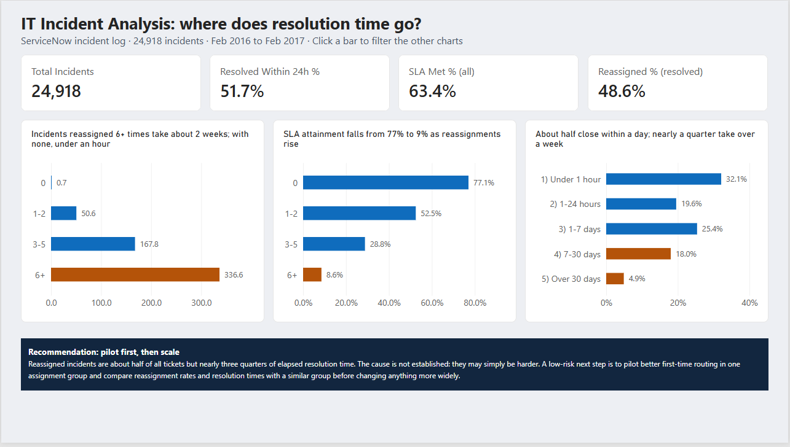

Where Do IT Incident Delays Come From?
A ServiceNow incident analysis in PostgreSQL and Power BI: 24,918 incidents, 141,712 events, and one clear pattern in what slows resolution down.

Incidents reassigned between teams are about half of all tickets but account for nearly three quarters of elapsed resolution time. The median rises from under an hour with no reassignments to about two weeks with six or more, and SLA attainment falls from 77% to 9%. The data shows an association, not proof of cause, so the recommendation is a small pilot of better first-time routing before any wider change.